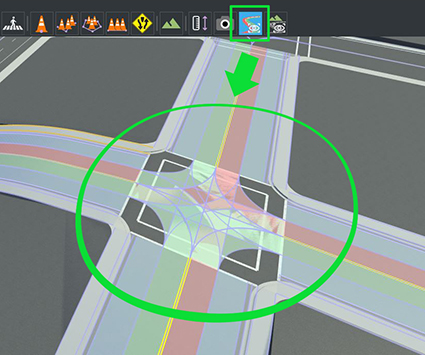
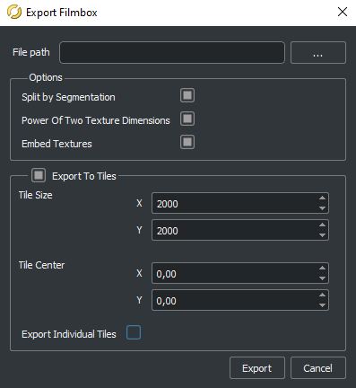

在 RoadRunner 中生成地图¶
RoadRunner 是推荐的软件，用于创建要导入 Carla 的地图。本指南概述了 RoadRunner 是什么、构建地图时需要考虑的事项以及如何导出自定义地图以准备导入 Carla。
RoadRunner 简介 ¶
RoadRunner 是一款交互式编辑器，可让您设计用于模拟和测试自动驾驶系统的 3D 场景。它可用于创建道路布局以及随附的 OpenDRIVE 和几何信息。 在 此处 能了解到更多 RoadRunner 的更多信息。
RoadRunner 是 MATLAB Campus-Wide License 的一部分，因此许多大学都可以提供无限制的学术访问。 检查 您的大学是否有权访问。如果您对辅助功能有任何疑问或困难，请联系 automated-driving@mathworks.com 。 还有 试用版 可用。
参加 Carla 排行榜的每个人都可以获得 RoadRunner 许可证。点击 此处 了解更多信息。
在你开始之前 ¶
您需要安装 RoadRunner。您可以按照 Mathworks 网站上的 安装指南 进行操作。
在 RoadRunner 中构建地图 ¶
关于如何在RoadRunner中构建地图的细节超出了本指南的范围，但是， RoadRuner文档 中提供了视频教程。
请记住，包含大量道具的地图会显着减慢导入过程。 这是因为虚幻引擎需要将每个网格物体转换为虚幻资源。如果您计划将地图导入到 Carla 的源构建版本中，我们强烈建议您仅在 RoadRunner 中创建道路布局，并在将地图导入到虚幻引擎之前保留任何自定义设置。 Carla 提供了多种工具，您可以在虚幻引擎编辑器中使用这些工具来简化自定义过程。
在 RoadRunner 中导出地图 ¶
以下是从 RoadRunner 导出自定义地图的基本指南。您可以在 MathWorks 文档 中找到有关如何导出到 Carla 的更多详细信息。
在 RoadRunner 中制作地图后，您就可以将其导出。请注意， 道路布局导出后无法修改。 导出前，请确保：
- 地图以 (0,0) 为中心，以确保地图可以在虚幻引擎中正确可视化。
- 地图定义是正确的。
- 地图验证是正确的，密切关注连接和几何形状。

地图准备就绪后，单击 OpenDRIVE Preview Tool 按钮即可可视化 OpenDRIVE 道路网络并对所有内容进行最后一次检查。

!!! 笔记
OpenDrive Preview Tool 可以更轻松地测试地图的完整性。如果连接有任何错误，请单击 Maneuver Tool 和 Rebuild Maneuver Roads。
当您准备好导出时：
1. 使用 Carla 选项导出场景：
- 在主工具栏中，选择
File->Export->CARLA (.fbx, .xodr, .rrdata.xml)
2. 在弹出的窗口中：
C检查以下选项：
- Split by Segmentation: 通过语义分割来划分网格。
- Power of Two Texture Dimensions: 提高性能。
- Embed Textures: 确保纹理嵌入到网格中。
- Export to Tiles: 选择图块的大小或仅保留一块不选中。
Leave unchecked:
- 导出单个图块: 生成一个包含所有地图片段的
.fbx文件。
3. 选择要将文件导出到的目录，然后单击 Export。这将生成 <mapName>.fbx 和 <mapName>.xodr 文件等。
!!! 笔记
确保 .xodr 和 .fbx 文件具有相同的名称。
下一步 ¶
您现在已准备好将地图导入 Carla。下一步将取决于您使用的 Carla 安装类型：
如果您对此流程有任何疑问，可以在 论坛 中提问。